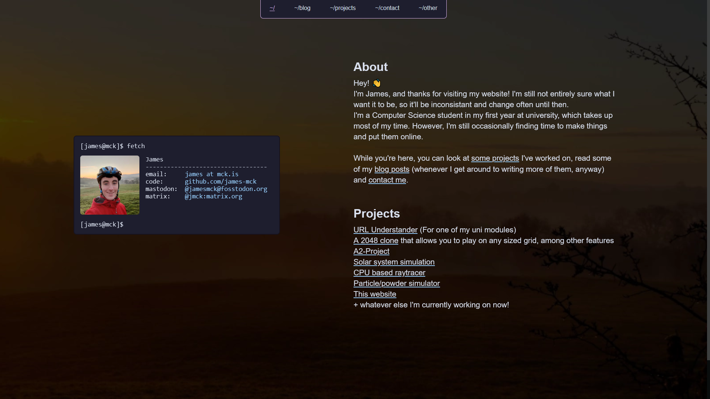
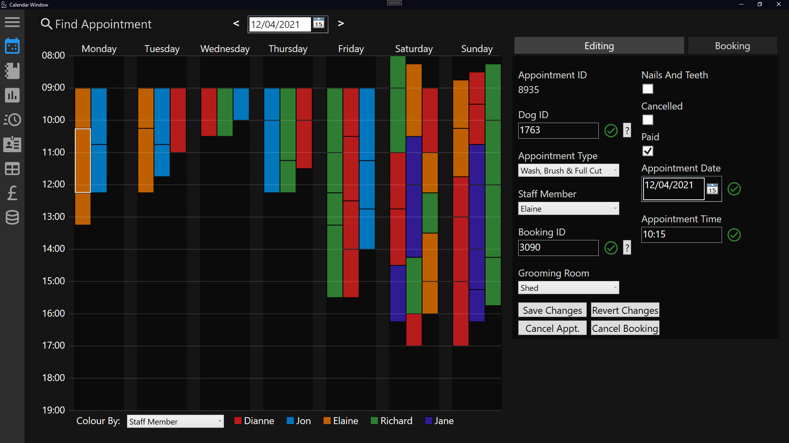
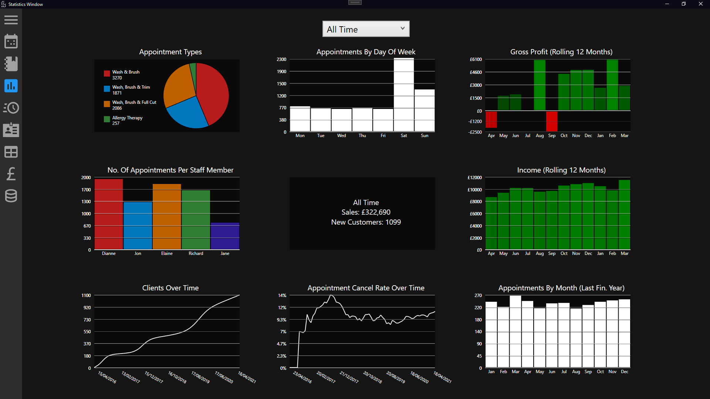

Projects
[WIP]This is just the initial version of this page - I'm currently working on its layout, but I wanted to get the content finalised first. I'll also probably add individual pages for some of the more significant projects too.
Personal website
The website you're currently browsing! Created by me, and optimised to be as minimal as possible. Several of the main pages, like this one, were created by hand, with some (e.g. blog posts) being generated automatically from markdown using templates and a script I've written.
 Code on github2048 clone
A significantly modified version of the original 2048, with new features including:
- Allowing boards of any size
- Support for theming, including a dark mode
- Additional challenges, such as an extra tile being added every second
- Generally cleaner code
A2 Project
This application was my A2 coursework project for Software Systems Development, written between 10/11/2020 and 14/03/2021 using C# and WPF. See the github page for more details and features.
  Code on github[Driving thing]
Description
CPU-based raytracer
A multithreaded CPU ray tracer written in C#. Based on the "Ray Tracing in One Weekend" book. Features:
- Reflections (inc. reflections of reflections) - Refraction (e.g. light passing through glass spheres)
- Accurate shadows
- Depth of field
- Multithreaded for significantly increaded performance
Particle/powder toy simulator
A small particle/powder toy simulator.
 Code on github
Code on github
PlanetPhysics
An n-body physics simulator built for fun as a side project.
 Code on github
Code on github
CSC1028
Catppuccin-MusicBee
A theme for the MusicBee music player based on the catpuccin colour palette
 Code on github
Code on github